というわけで、早起きをして近所を散策。
朝市が出ていて、牛とか豚とか鶏とか魚とかがわんさか。
というわけで、早起きをして近所を散策。
朝市が出ていて、牛とか豚とか鶏とか魚とかがわんさか。
{kind=link}
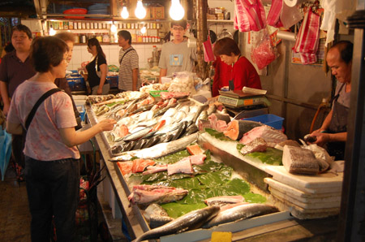
肉、theさばきたて{kind=link}
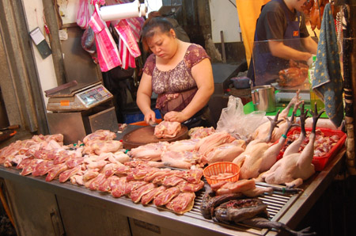
お魚はまあまあ馴染みのある魚が多いかな。{kind=link}
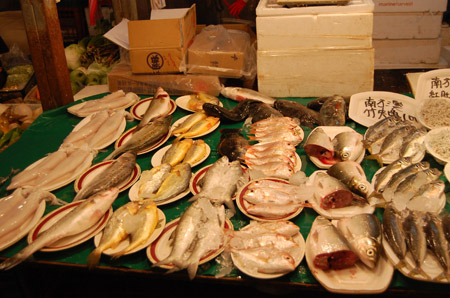
野菜どっさり。台湾は青菜が美味しいね。{kind=link}
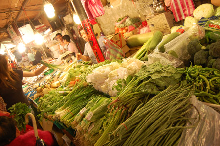
玉子やさん。パックに入ってないだけで、なんだか新鮮っぽく見えるなー。{kind=link}
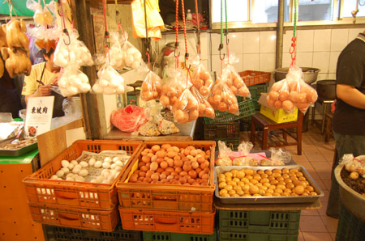
総菜！やまもり！{kind=link}
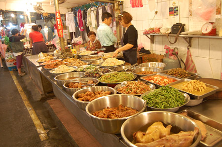
これも総菜！やまもり！{kind=link}
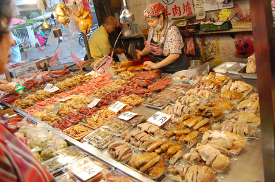
…と、市場をふらふらしたり町中ふらふらしたり、公園ふらふらして永康街に到着。 小籠包の「鼎泰豊」に到着。入り口のおねえさんかわいいな。{kind=link}
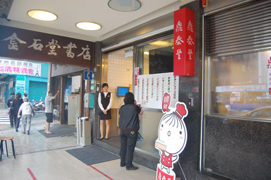
っていうか、ここの従業員のおねえさんはみんなかわえええ。 鼎泰豊規定でもあるのかな。ちょっと制服にしては短めのスカートがまたヨシ。{kind=link}
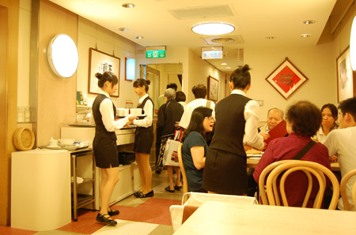
小籠包到着。{kind=link}
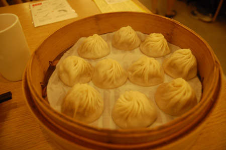
むほ！そうそう。これこれ！汐留、熊本と鼎泰豊の日本支店に行ったけどダメダメだったのが明らかに！ 肉汁たっぷりでむっちりした皮を頬張ればぷっちりはじける！ 勢い余って、口から肉汁がぴゅっと飛び出すから要注意。京鼎楼にも行ったけど、やっぱりワタクシ的には鼎泰豊が小籠包の最高峰かも。 10%のサービス料がかかったり、キャッシュオンリーだったりするけど、社員教育が行き届いているのか、居心地もいいし、お茶のサービスも丁寧で、何度も入れてくれる…（あとトイレがとてもキレイ！鼎泰豊を利用したら必ずよると良かですよ）{kind=link}
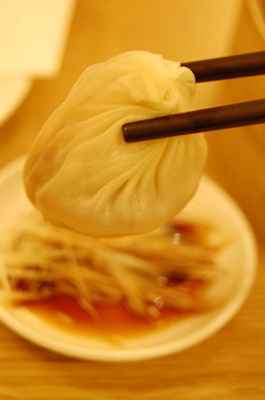
そっから腹ごなしに西門市場に歩いていく。 オープンエアのお食事どころ{kind=link}
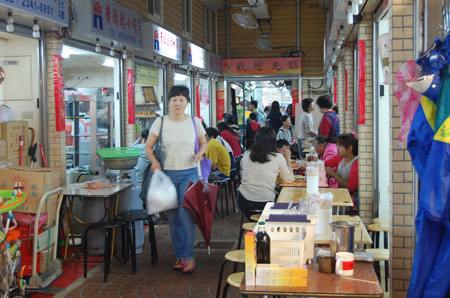
昔、実家のちかくにあった市場っぽいなー。懐かしさがむずむず。{kind=link}
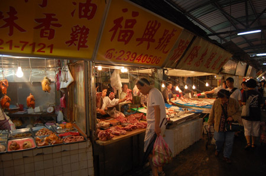
鶏さん達が、商品となってしまったお友達の下で待機中。 この、命を頂くアピールスタイルは定番らしい。{kind=link}
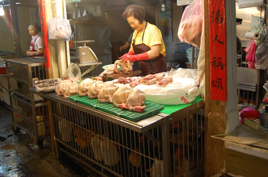
昭和50年の記憶のような。{kind=link}
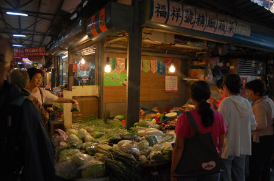
カラフルなお寿司{kind=link}
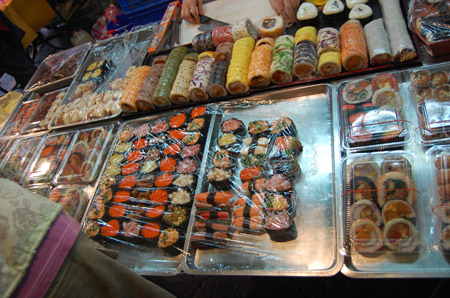
大きな魚と格闘中のおじさま{kind=link}
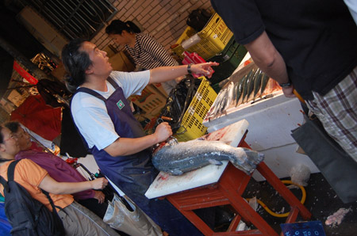
というわけで、市場風景の動画でございます。 世界ふれあい街あるき風にご覧くださいっ！ 南門市場。 やたらと赤い。{kind=link}
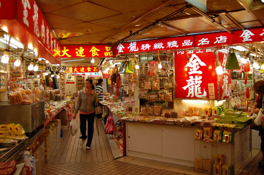
お土産によさげな加工品があれこれ。 お総菜コーナーとかもあって、晩ご飯とかに買い出しにくるのも楽しそう。{kind=link}
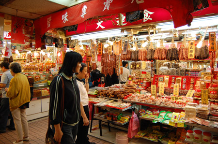
なんか中野ブロードウェイの上階っぽいよ。{kind=link}
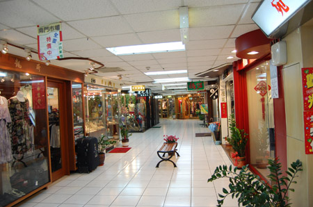
おばちゃんたちはアニマルが好き{kind=link}
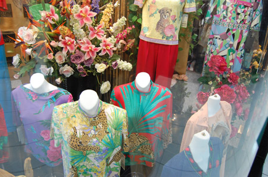
牛肉麺。お肉美味しいなー。麺は店先に「手打ち」って書いてあったけど。赤いきつねの麺ぽかった。{kind=link}
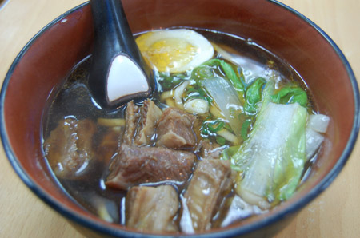
龍山寺{kind=link}
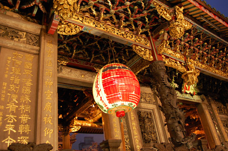
祈りの場はどこの国も美しいな。 おみくじの結果は93番。{kind=link}
{kind=link}
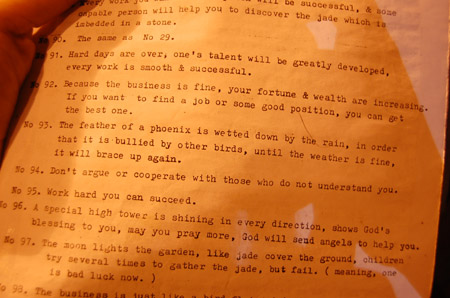
んでもってまた夜市。{kind=link}
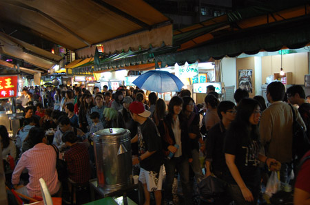
さっき捌かれていた人たちの亡霊じゃないよね{kind=link}
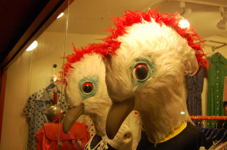
そんなわけで夜市お持ち帰りの弁当。 鶏がからっと揚がっていて、骨もポリポリ。 私がこのお弁当を注文したとき、同じタイミングで同じ弁当を頼んだおじさまがいて、 「もやし要らない！」っていうことを言ってた（もちろん言葉はわかんないけど、身振り手振りでそんな感じだった） 「へーもやし嫌いな人なんだー。私はもやし好きだからいいけどー」って思ってたら、私の弁当が「もやし抜きバージョン」に取り違えられてた… もやし抜きおじさまも、蓋を開けて「あーーーーー！もやし入れるなって言ったのに！」ってショックをうけただろうけど、私も訳の分からないもやしの代替品を食べることに… 「見た目は輪ゴム…食感も…輪ゴム…」もやしのほうが美味しいんじゃないのかなー{kind=link}
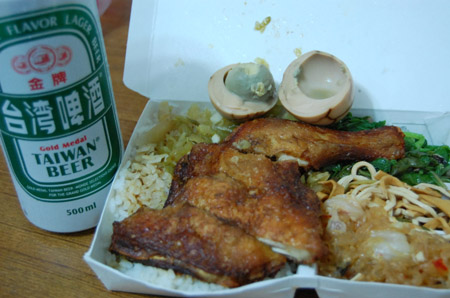